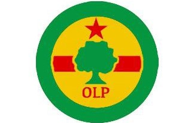
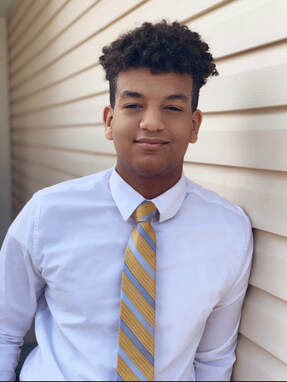
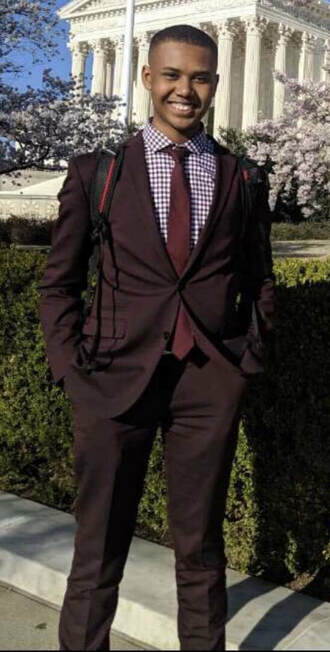
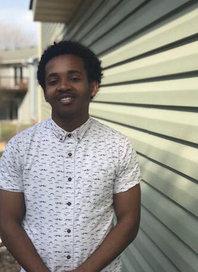

Oromo Leadership Program
Mentoring our Oromo Youth into Strong Leaders for the Future
About Us

Oromo Leadership Program is a non profit organization that desires to improve relationships in our Oromo
community in Minnesota. All of our founders have always dreamt of somehow giving back to the community that
created who we are today, so this is our way of returning the favor.
Mission Statement
Establishing connections between Oromo youth that will last a lifetime and create a unified community.
Our Team
Guta Shokiyo

I am a senior at Tartan High School in Oakdale, Minnesota. I am involved in many things at school including
DECA, Student Council, National Honors Society, and Relay for Life programs. I’ve always had a passion for
business and in my free time you can find my reading up on business ethics. I enjoy playing recreational
basketball with my friends, but also spending time with my family and discovering new things. I started OLP
because I noticed a significant disconnect in our youth and a need of unity in the community. In my future, I
plan on studying marketing information systems, but also minor in humanities and help my oromo community back
home. In fifteen years, I see myself as a successful informations system manager and making a change in Oromia.
Hennaa Foge
I am a sophomore at Lakeville North High School, in Lakeville Minnesota. I am a Youth teaching
Youth volunteer, and I also volunteer at Fairview Ridges Hospitals. During my free time I enjoy cooking and
read and watch medical shows and articles. I love spending time with my loved ones. I love to organize and
decorate for parties. I started OLP in the hopes to inspire the youth to explore new things, to be who they
want, be the best at anything they love to do, and to love their roots. I want the community to support each
other and be there for each other. I plan on studying

Nuurasuu Tufaa
 I am a senior at Breck School in Minneapolis, Minnesota. I play basketball for my school, and
I also participate in Breck’s Advanced History Research Program. I am currently studying at the School for
Ethics and Global Leadership in Washington D.C. In D.C., I’m learning about how I can become a more ethical
leader. I’m also learning about the ins and outs of the United States’ political system. I enjoy writing
poems and playing basketball when I’m free. I started OLP because I wanted to do my part in inspiring young
Oromo boys and girls to be proud of their Oromo identities. Throughout high school I haven’t had many
opportunities to connect with other Oromo students. I plan on studying political science in college. In
fifteen years, I see myself as an immigration and criminal justice lawyer.
Ebenezer Shupare

I am a senior at Champlin Park High School in Champlain, Minnesota. I play football for Champlin Park for
two years and am very committed to the team. I’ve always been deeply interested in the engineering field and
often try to keep up with new advancements in the technological world. I plan on studying mechanical or
electrical engineering. I started OLP because I am a firm believer in giving back to where you came from.
I’ve seen so many first generation Americans not knowing what to do or how to prepare themselves for school
in america because of lack of guidance. I myself have struggled with how to go about bettering myself in a
school environment and wish to build a wide spanning network of connections for young Oromos to build
themselves up and become leaders in our community.
Moyata Ebisso
I am a senior at Irondale High School in New Brighton, Minnesota. I play Varsity tennis, C1
soccer for Blaine Soccer Club, am a member of Irondale’s Science Olympiad team and Math Team, and also part
of the National Honors Society. For fun I learn as much as possible about computer science and spend time
with family and friends. I started OLP because I have seen many Oromo teenagers start going down the wrong
path in life, so I wanted to help them get their lives back on track and inspire them to become the best
that they could possibly be. I will be attending Stanford Summer Session during the summer of 2019, so there
I will be studying Computer Science and I will also do the same during college. In 15 years I see myself
working somewhere in the field of computer science.
Bassaa Tufaa
Contact Info
You can contact us with our email at oromoleadershipprogram@gmail.com or you could direct message us on
instagram @OLP__MN or you could call us at 763-639-3746